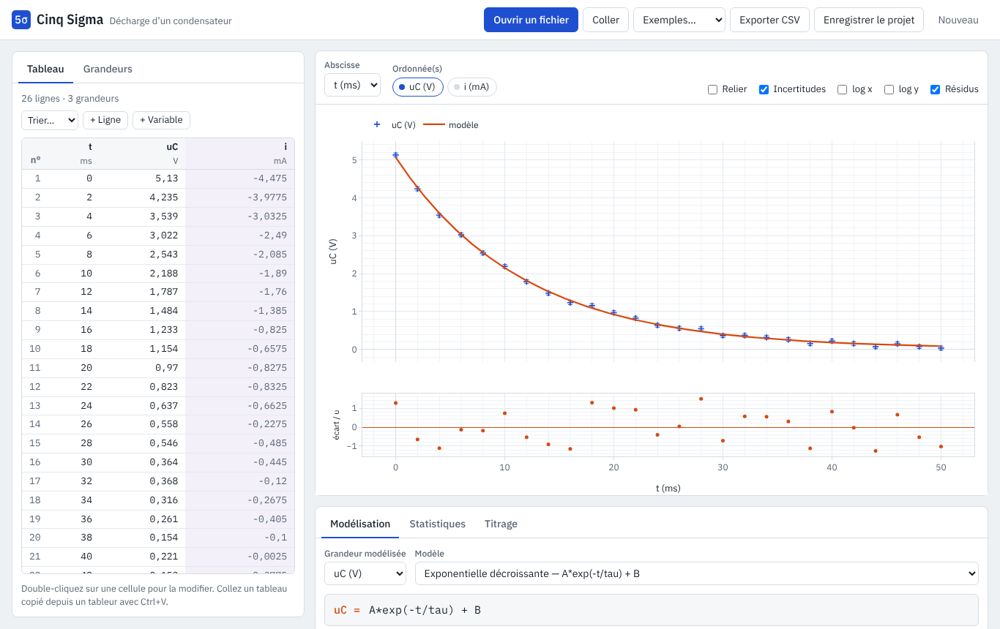
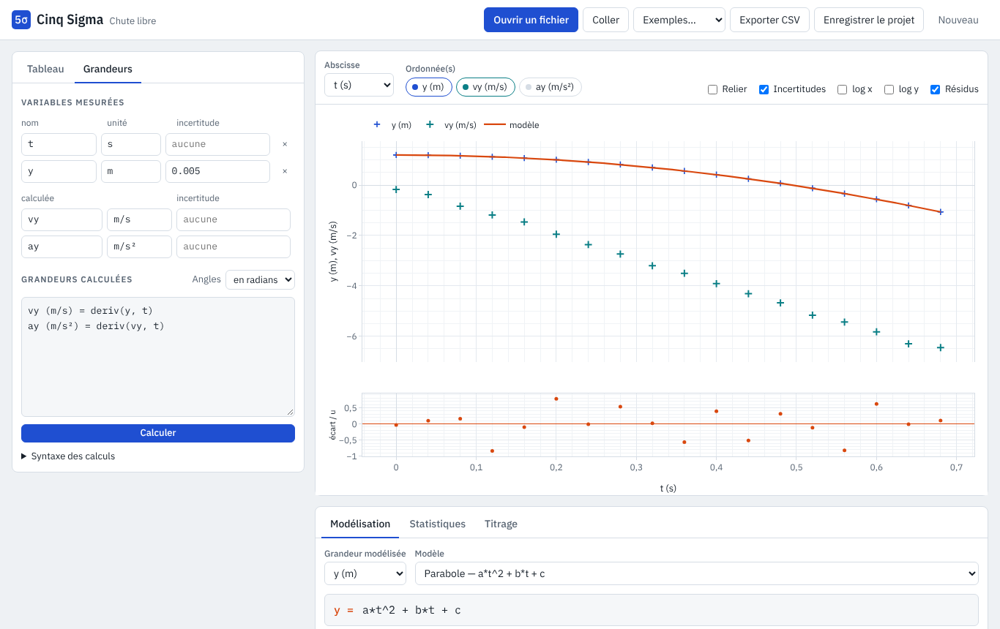
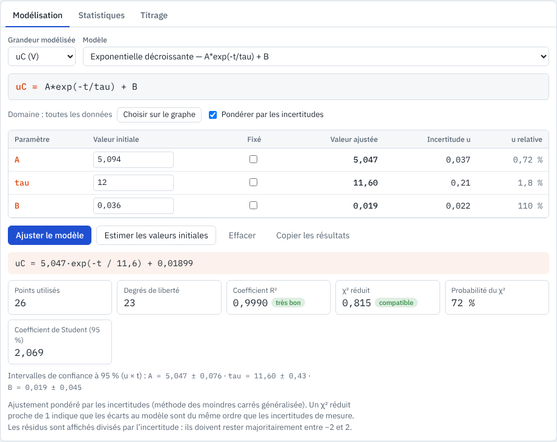
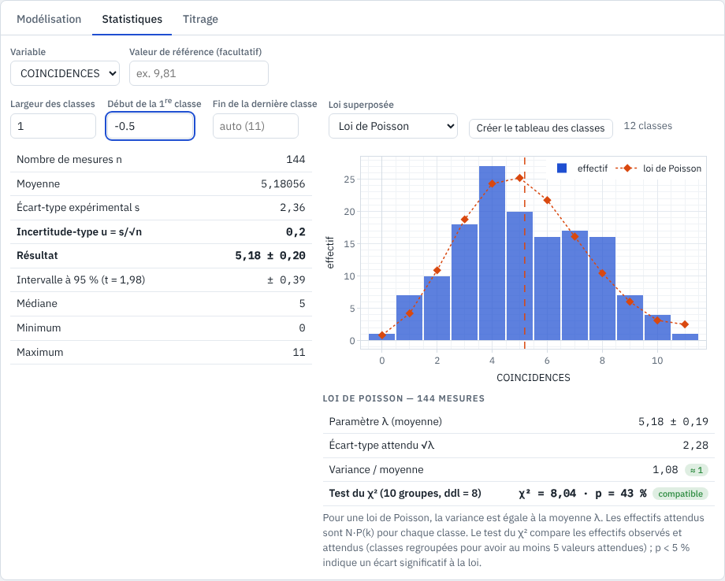
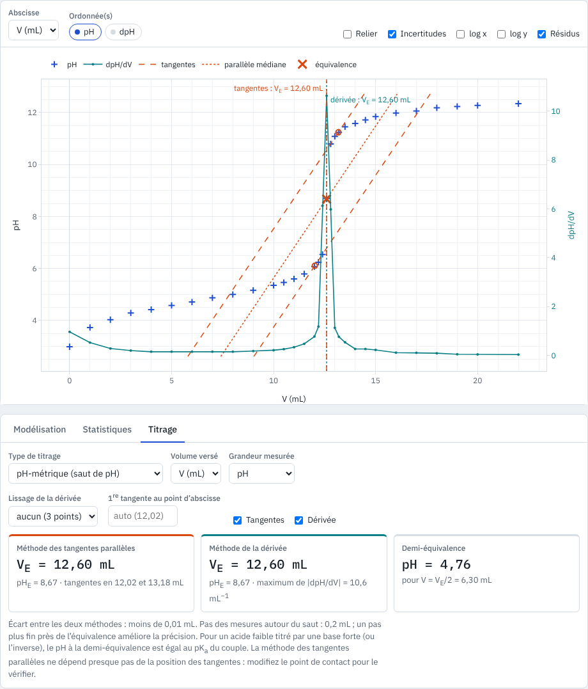
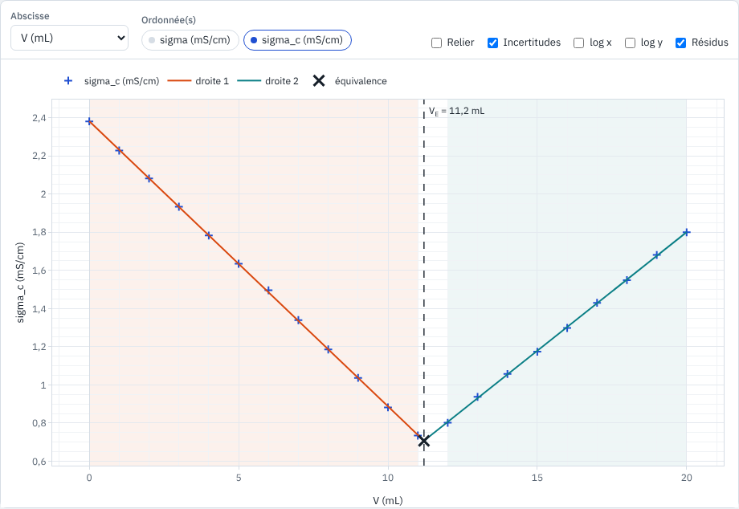
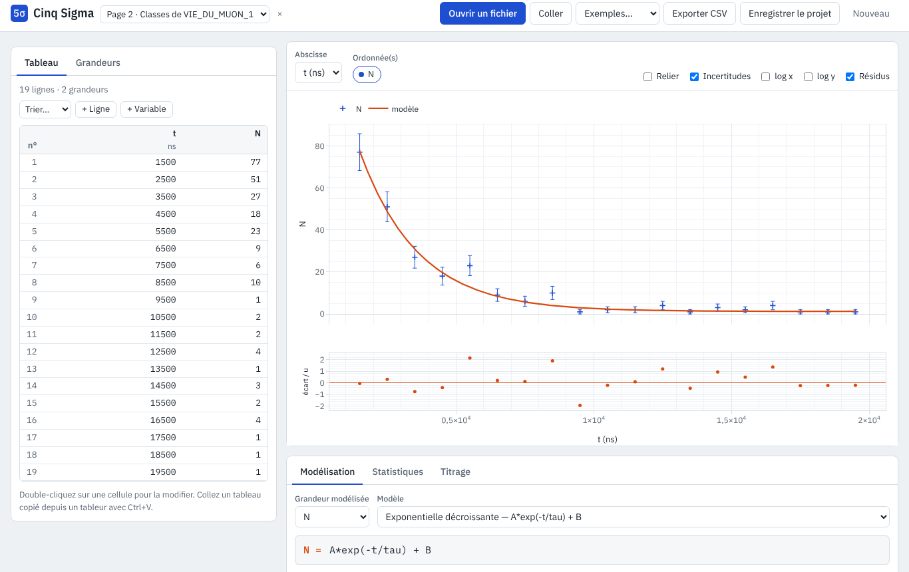

Des mesures au résultat avec son incertitude
Cinq Sigma fait ce que l’on attend d’un logiciel de traitement de données en travaux pratiques, directement dans le navigateur, sur n’importe quel ordinateur ou tablette.
- Importer fichiers CSV, TXT, ODS ou XLSX venant d’un tableur, d’une console d’acquisition, d’un pointage vidéo ou d’une carte Arduino, ou simple copier-coller.
- Calculer nouvelles grandeurs, dérivées et intégrales :
v = deriv(x, t),Ec = 0.5*m*v^2, avec les incertitudes en barres d’erreur. - Modéliser treize modèles prêts à l’emploi ou une expression libre ; paramètres avec leur incertitude, R², χ² et graphe des résidus.
- Statistiques moyenne, écart-type, incertitude-type s/√n, histogramme réglable, lois de Gauss et de Poisson.
- Titrer équivalence d’un titrage pH-métrique (tangentes parallèles et dérivée) ou conductimétrique (deux demi-droites).
Le nom fait référence au seuil de « cinq sigma » : en physique des particules, un écart de cinq écarts-types est exigé avant d’annoncer une découverte, comme celle du boson de Higgs en 2012.


Pour quelles activités
Cinq Sigma ne dépend d’aucun appareil de mesure : toute série de valeurs rangées en colonnes peut être traitée. Quelques exemples d’activités, du collège au post-bac :
| Domaine | Exemples de traitements |
|---|---|
| Mécanique | pointage vidéo d’une chute ou d’un projectile, vitesse et accélération par dérivation, énergies ; période d’un pendule et loi en √L ; oscillations amorties |
| Électricité | loi d’Ohm, caractéristiques de dipôles, charge et décharge d’un condensateur (constante de temps τ), circuits RL |
| Optique et ondes | loi de Snell-Descartes avec les angles en degrés, relation de conjugaison, longueur d’onde et célérité, atténuation |
| Chimie | titrages pH-métriques et conductimétriques, pKa à la demi-équivalence, loi de Beer-Lambert et droite d’étalonnage, cinétique (ordre 1, temps de demi-réaction) |
| Thermodynamique | loi de Mariotte, dilatation, refroidissement d’un corps (loi de Newton), capacités thermiques |
| Radioactivité et particules | comptages et loi de Poisson, décroissance radioactive, durée de vie du muon à partir d’un histogramme de durées, fichiers du logiciel Microcosmos |
| Mesures et incertitudes | séries de mesures répétées, incertitude-type de type A, écart normalisé à une valeur de référence, comparaison de deux méthodes |
| SVT et autres sciences | croissance d’une population, relevés de terrain, toute série de données à représenter, ajuster ou résumer statistiquement |
Utiliser Cinq Sigma
Cinq Sigma fonctionne en ligne, sans installation ni compte. Les mesures restent sur l’ordinateur : rien n’est envoyé sur un serveur.
Version web
rien à installer
▶ Lancer Cinq Sigma- Firefox, Chrome, Edge, Safari, sur ordinateur ou tablette
- travail enregistré automatiquement dans le navigateur, retrouvé à la prochaine ouverture
- projet
.jsonà enregistrer et à rouvrir, export CSV pour le tableur - connexion internet nécessaire au lancement (bibliothèques de calcul et de graphes)
- sur téléphone, l’écran est petit pour le tableau et le graphe
Fichiers acceptés
| Format | D’où il vient |
|---|---|
.csv .txt .dat | consoles d’acquisition, logiciels de pointage vidéo, Arduino, Microcosmos, exports de tableur |
.ods .xlsx .xls | LibreOffice Calc, Excel (choix de la feuille) |
| copier-coller | colonnes copiées dans un tableur ou une page web (Ctrl+V) |
.json | projet Cinq Sigma enregistré |
Séparateur point-virgule, virgule, tabulation, espace ou autre ; virgule ou point décimal ; noms et unités en tête de colonne (t (s)) ou sur une ligne à part.
Mise en route
1 · Saisir ou importer
Saisissez les mesures dans le tableau (double-clic sur une cellule), ou cliquez sur Ouvrir un fichier, glissez un fichier dans la page ou collez un tableau.
L’aperçu indique pour chaque ligne si elle est lue comme noms, unités, données ou ignorée ; tout se corrige à la main avant de valider.
2 · Calculer et tracer
Onglet Grandeurs : une ligne par grandeur calculée, par exemple vy (m/s) = deriv(y, t). Indiquez l’incertitude de chaque variable : un nombre ou une formule.
Choisissez l’abscisse et les ordonnées au-dessus du graphe.
3 · Modéliser et conclure
Choisissez un modèle : les valeurs initiales sont estimées et l’ajustement est immédiat. Choisir sur le graphe limite le modèle à une partie des points.
Pour essayer sans fichier, le menu Exemples propose dix jeux de données.
Les fonctions

Importer sans surprise
- Les réglages sont proposés automatiquement et tous modifiables : séparateur de colonnes, séparateur décimal, ligne des noms, ligne des unités, première et dernière ligne de données.
- L’aperçu montre le rôle de chaque ligne ; les cellules qui ne sont pas des nombres apparaissent en rouge et resteront vides.
- Chaque colonne se coche ou se décoche ; les lignes de titre et les lignes de total en fin de fichier sont écartées.
- Ajouter les colonnes complète un tableau existant avec une seconde série de même longueur.


Grandeurs calculées et incertitudes
- Une ligne par grandeur :
nom (unité) = expression. Une expression sans variable définit une constante. - Fonctions usuelles (
sqrt,exp,ln,sin…), angles en degrés ou en radians au choix, dérivéederiv(y, t), intégraleinteg(y, t), etmean,std,maxsur toute une colonne. - L’incertitude d’une variable est un nombre (
0.005) ou une formule (0.02*U + 0.01) ; elle s’affiche en barres d’erreur et sert à pondérer la modélisation. - Notation scientifique en puissances de 10 et unités avec exposants (
m/s^2s’affiche m/s²). - Graphe sur papier millimétré : plusieurs ordonnées, échelles logarithmiques, zoom et export en image. Tri du tableau selon n’importe quelle colonne.


Modélisation
- Linéaire, affine, parabole, exponentielles, charge du premier ordre, puissance, logarithme, sinusoïde, sinusoïde amortie, gaussienne… ou expression libre avec n’importe quels paramètres.
- Chaque paramètre est donné avec son incertitude-type, son incertitude relative et son intervalle de confiance à 95 % (coefficient de Student). Un paramètre peut être fixé.
- R² et, quand les mesures ont une incertitude, χ² réduit et sa probabilité : un χ² réduit proche de 1 signifie que le modèle est compatible avec les incertitudes.
- Le graphe des résidus sous la courbe permet de repérer un modèle mal choisi.


Statistiques et lois de probabilité
- Moyenne, écart-type expérimental, incertitude-type s/√n, intervalle à 95 %, médiane ; écart normalisé à une valeur de référence.
- Histogramme : largeur, début et fin des classes choisis à la main, ou automatiques.
- Loi normale ou loi de Poisson superposée, avec les paramètres estimés, les effectifs attendus et un test du χ² d’adéquation.
- Pour les comptages, le rapport variance / moyenne, proche de 1 pour une loi de Poisson.


Titrages
- pH-métrique : méthode des tangentes parallèles (tangentes, parallèle médiane et point équivalent tracés sur le graphe) et méthode de la dérivée (maximum de dpH/dV, avec un lissage réglable).
- Le point de contact de la première tangente se choisit à la main pour vérifier que le résultat n’en dépend presque pas.
- pH à la demi-équivalence, égal au pKa pour un acide faible titré par une base forte.
- Conductimétrique : deux droites ajustées avant et après l’équivalence, intervalles choisis automatiquement, au clavier ou à la souris ; VE à leur intersection, avec son incertitude.




Classes, histogrammes et durées de vie
- À partir d’une colonne de mesures brutes (durées, énergies, tailles…), on règle le début, la largeur et la fin des classes.
- Créer le tableau des classes ouvre une nouvelle page : centre de chaque classe, effectif N et son incertitude √N.
- Ce tableau se modélise comme les autres, par exemple
N = A·exp(−t/τ) + Bpour une décroissance radioactive ou la durée de vie du muon. - Un projet peut contenir plusieurs pages de données ; on passe de l’une à l’autre par la liste en haut de l’écran.
Aide-mémoire
Écrire un calcul
# une ligne par grandeur, unité facultative m (kg) = 0.250 v (m/s) = deriv(x, t) Ec (J) = 0.5*m*v^2 A = log10(I0/I) lnC = ln(C)
Point décimal dans les formules (0.5) ; virgule ou point dans le tableau. ^ pour les puissances, pi pour π, 2.5e-7 ou 2.5×10^-7 pour la notation scientifique. Angles de sin, cos, tan en radians ou en degrés selon le réglage « Angles ».
Lire les résultats
| a = 2,00 ± 0,03 | valeur ± incertitude-type ; l’incertitude est arrondie à 2 chiffres |
| R² | part de la variation expliquée par le modèle ; ne suffit pas à valider un modèle |
| χ² réduit | ≈ 1 : écarts du même ordre que les incertitudes ; ≫ 1 : modèle ou incertitudes à revoir |
| résidus | doivent se répartir au hasard autour de 0, sans tendance |
| p du test χ² | p < 5 % : écart significatif entre l’histogramme et la loi |
Exemples intégrés (menu Exemples) : décharge d’un condensateur, chute libre filmée, loi d’Ohm, réfraction (angles en degrés), période d’un pendule, oscillations amorties, titrages pH-métrique et conductimétrique, comptage radioactif, durée de vie du muon.
Sauvegarder et partager
Le travail en cours est gardé dans le navigateur et retrouvé à la prochaine ouverture sur le même ordinateur.
Pour le conserver ou le rendre, Enregistrer le projet produit un fichier .json (données, calculs, modèle et pages) qui se rouvre avec Ouvrir un fichier.
Exporter CSV donne le tableau complet, grandeurs calculées comprises, avec point-virgule et virgule décimale pour LibreOffice et Excel. Le bouton appareil photo du graphe l’enregistre en image.
Auteurs et licence
Cinq Sigma, conception et direction du projet : Cédric Vanden Driessche (2026), professeur de physique-chimie au lycée Charles de Gaulle à Caen (cedric.vanden-driessche@ac-normandie.fr) ; développement du code : Claude (Anthropic), sous sa direction.
Logiciel libre sous licence GNU GPL v3 ou ultérieure, distribué sans aucune garantie. Cinq Sigma utilise les bibliothèques libres math.js, Plotly et SheetJS.
Code source : dépôt cinq-sigma/cinq-sigma.github.io sur GitHub.